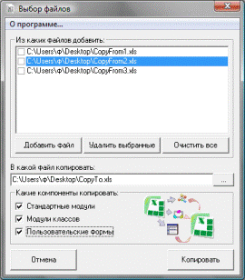
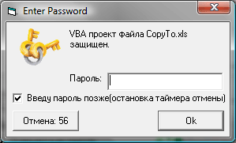

Copy_VBAProject_Components.zip (267,7 KiB, 4 267 скачиваний)
Copy_VBAProject_Components.zip (267,7 KiB, 4 267 скачиваний)Копирование модулей и форм из одной книги в другую
30 Апрель 2011 Дмитрий 35200 просмотров
Программа слегка специфична. Она копирует выбранные компоненты VBA проекта из выбранных книг в одну книгу. При этом, если у Вас на какой-либо из выбранных книг установлен пароль на VBA проект - то программа предложить его ввести и в случае правильного пароля скопирует компоненты и продолжит работу.

Добавить файлы - выбор файла для добавления в список файлов, выбранные компоненты которых будут копироваться.
Удалить выбранные - предварительно выбираете из списка файлы(отмечаете их галочкой). Все отмеченные файлы, после нажатия этой кнопки будут удалены из списка. Сами файлы не удаляются.
Очистить все - удаляет из списка все файлы. Ничего отмечать не надо. Сами файлы не удаляются.
Как использовать:
Сюда не включены компоненты классов ЭтаКнига(ThisWorkbook) и Листов(Worksheets), т.к. при копировании они будут скопированы либо как модули классов, либо в модули аналогичных листов. Т.к. ни первый ни второй вариант не показались мне практичным - я решил исключить эти компоненты из списка. Есть мысли как это сделать - но это может быть появится в следующей версии программы. Если у кого-то есть какие-то предложения по усовершенствованию - пишите на эл.адрес, указанный в программе("О программе...")
Если в процессе копирования, программа обнаружит, что VBA проект защищен паролем - то появиться такая форма:

Вам надо будет указать пароль к проекту, после чего программа сама впишет пароль, откроет проект и скопирует указанные компоненты.
Если Вы укажете неверный пароль, то появиться стандартное окно VBA, сообщающее о неверном пароле, а за ним сообщение программы о невозможности копирования. Эта книга будет пропущена и программа перейдет к копированию из другой книги.
Стоит обратить внимание, что при появлении формы ввода пароля начинается обратный отсчет времени(60 сек). По истечении этого времени форма закроется и запароленная книга будет пропущена и компоненты из неё не будут скопированы. Это сделано для того, чтобы если Вы запустили программу и ушли, то она смогла отработать и закрыться без Вашего участия. Если для того, чтобы вспомнить(или найти) нужный пароль Вам потребуется времени больше, чем 60 сек, то надо установить флажок - "Введу пароль позже(остановка таймера отмены)". Отсчет будет остановлен.
Скачать программу:
Copy_VBAProject_Components.zip (267,7 KiB, 4 267 скачиваний)
Внимание: программа распространяется бесплатно. Распространение данной программы в коммерческих целях запрещено.